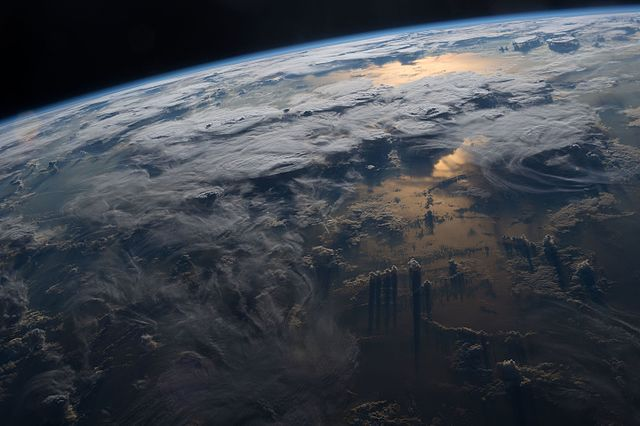
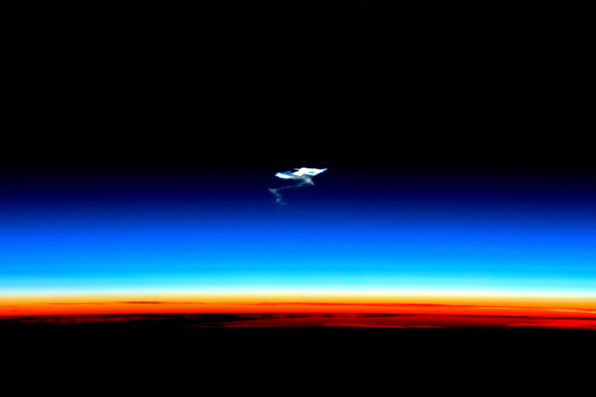
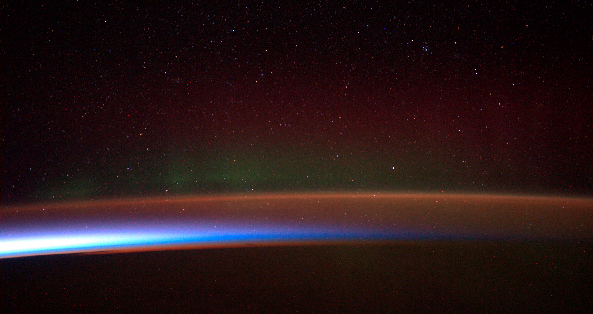
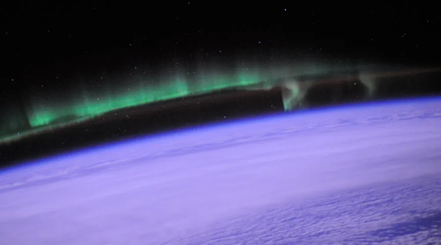
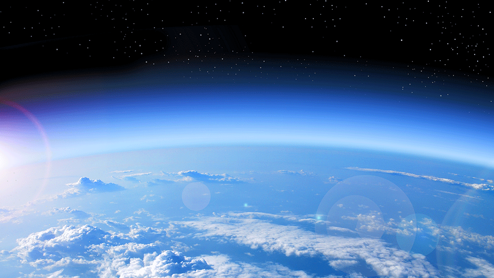

Atmosfer
by Metta Sutanto | X-3
GO EXPLORE!

Apa itu Atmosfer?
Berasal dari kata
Atmos
Udara/Gas
Spaira
Lapisan/Bola
"Atmosfer adalah lapisan udara yang mengelilingi planet, termasuk Bumi. Ini merupakan bagian penting dari kondisi yang memungkinkan kehidupan ada di planet kita. Atmosfer Bumi terdiri dari berbagai gas seperti nitrogen, oksigen, karbon dioksida, dan uap air, serta partikel-partikel kecil lainnya."
Komposisi Kimia Atmosfer Bumi
- Nitrogen78%
- Oxygen21%
- Argon0.93%
- Neon0.0015%
- Krypton0.0001%
- Helium0.00015%
- Carbon Dioxide0.03%
- Xenon0.000005%
- Water Vapor-
- Cosmic Dust-
Lapisan-Lapisan Atmosfer Bumi
Atmosfer bumi terbagi menjadi lima lapisan utama, masing-masing memiliki karakteristik yang berbeda. Berikut adalah penjelasan singkat tentang setiap lapisan atmosfer
Troposfer
Troposfer
Stratosfer
Stratosfer
Mesosfer
Mesosfer
Thermosfer
Thermosfer
Eksosfer
Eksosfer
Back
Lapisan 1/5
Troposfer
Lapisan troposfer adalah lapisan terbawah dari atmosfer Bumi yang berbatasan langsung dengan permukaan bumi di mana sebagian besar fenomena cuaca terjadi. Ini adalah tempat di mana udara yang kita hirup dan kehidupan Bumi berada. Suhu cenderung menurun seiring dengan ketinggian di dalam troposfer ini.
Terjadi peristiwa cuaca:
- Awan
- Angin
- Hujan
- Halilintar
Dibagi Menjadi 3 lapisan:
- Planeteir (0-1 km)
- Konveksi (1-8 km)
- Tropopause (8-12 km)
Back
Lapisan 2/5
Stratosfer
Lapisan stratosfer adalah lapisan atmosfer Bumi yang terletak di atas troposfer dan di bawah mesosfer. Ini adalah lapisan atmosfer yang terletak antara ketinggian sekitar 10 hingga 50 kilometer di atas permukaan Bumi. Terdapat lapisan Ozon (O3) yang berfungsi sebagai perlindungan Troposfer dan permukaan bumi dari pancaran ultraviolet matahari.
Lapisan stratosfer terdiri dari:
- Isotherm (12-35 km)
- Panas (35-50 km)
- Teratas (50-80 km)
Back
Lapisan 3/5
Mesosfer
Lapisan ke-3 dari atmosfer bumi. Berada pada ketinggian 50-85 km. Pada lapisan ini, temperatur menurun tajam hingga -140°C. Dimana banyak meteor yang terbakar dan terurai pada lapisan ini.
Back
Lapisan 4/5
Thermosfer
Terletak di atas lapisan Mesofer dengan ketinggian 80-800 km. Terjadi peristiwa ionisasi pada lapisan ini. Ion positif (proton) dan ion negatif (elektron) bertemu, sehingga disebut juga lapisan ionsfer atau lapisan inverse
Back
Lapisan 5/5
Eksosfer
Lapisan ke-5 (terluar) dari atmosfer bumi. Terletak pada ketinggian 800-1.000 km dari permukaan bumi. Lapisan ini disebut sebagai lopisan disipasisfer atau ruang antar planet dan geostasioner.
Bukti Nyata Atmosfer

Berjalan Kaki

Menggunakan Transportasi Umum